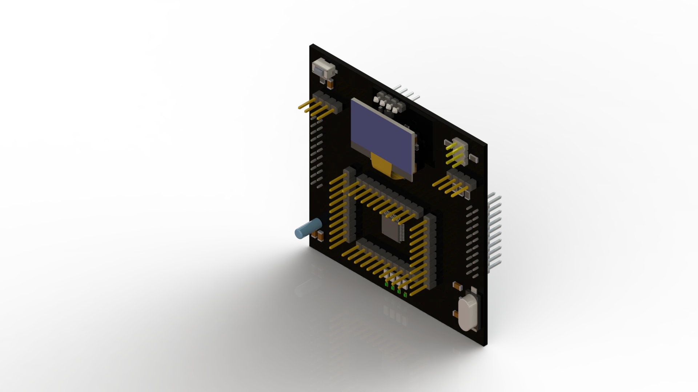
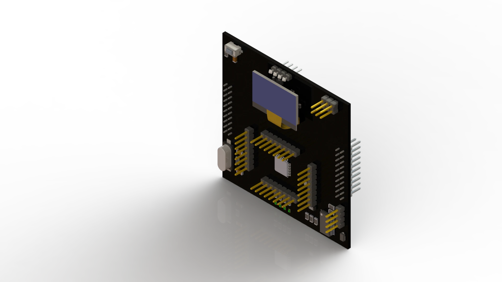

Yap-Boz Power Distribution Module is one of the internal structures of the Yap-Boz. This module organizes and manages the energy flow between other modules. It also balances the power distribution between the modules, ensuring efficient and long-term use of the modules.
YB-STM

Yap-Boz STM32 Module, STM32 "Blue Pill" is a popular development board featuring the STM32F103C8T6 microcontroller, part of STMicroelectronics' STM32 family of ARM Cortex-M-based microcontrollers.
YB-ANM

Yap-Boz Arduino Nano Module, Arduino Nano is a member of the popular Arduino platform and is a compact development board. It is used in many projects thanks to its small size and affordable price.